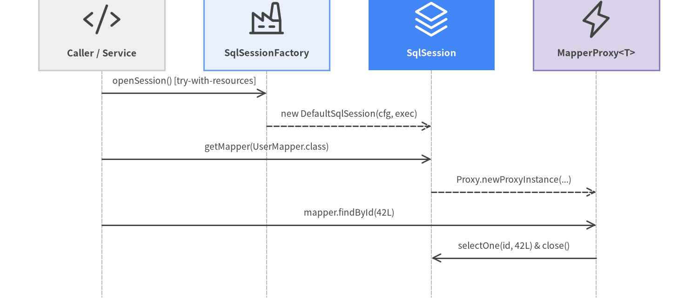

Session & Binding API
Core session management, configuration registry, streaming cursor, and dynamic mapper binding interfaces in org.apache.ibatis.session, org.apache.ibatis.binding, and org.apache.ibatis.cursor.

Source Code
from drawlib.canvas import save, setup
from drawlib.diagrams.sequence import Participant, PhosphorIcon, SequenceDiagram
from drawlib.styles import Styles
setup(width=144, height=62, dpi=150)
sd = SequenceDiagram(
node_style=Styles.Dark,
node_text_style=Styles.DarkBold.patch(text_size=9.6),
edge_style=Styles.Dark.patch(line_width=1.4),
edge_text_style=Styles.Dark.patch(text_size=9.2),
node_card_style=Styles.Neutral,
col_width=34.0,
step_y=6.8,
)
p_app = sd.add(Participant("Caller / Service", icon=PhosphorIcon.CODE, width=26, card_style=Styles.Neutral))
p_fac = sd.add(Participant("SqlSessionFactory", icon=PhosphorIcon.FACTORY, width=26, card_style=Styles.PrimaryNeutral))
p_ses = sd.add(
Participant(
"SqlSession",
icon=PhosphorIcon.STACK,
width=26,
style=Styles.White,
text_style=Styles.WhiteBold.patch(text_size=9.6),
card_style=Styles.PrimaryFlat,
)
)
p_map = sd.add(Participant("MapperProxy<T>", icon=PhosphorIcon.LIGHTNING, width=26, card_style=Styles.SecondaryNeutral))
p_app.request(p_fac, "openSession() [try-with-resources]")
p_fac.reply(p_ses, "new DefaultSqlSession(cfg, exec)")
p_app.request(p_ses, "getMapper(UserMapper.class)")
p_ses.reply(p_map, "Proxy.newProxyInstance(...)")
p_app.request(p_map, "mapper.findById(42L)")
p_map.request(p_ses, "selectOne(id, 42L) & close()")
sd.draw(xy=(72, 31), align="center")
save()
classSqlSessionFactoryBuilder#
Bootstrap builder (org.apache.ibatis.session.SqlSessionFactoryBuilder) that parses an XML Reader / InputStream or accepts a programmatic Configuration to construct an immutable DefaultSqlSessionFactory. Discard the builder instance immediately after build() returns.
| Method Signature | Return Type | Description |
|---|---|---|
build(InputStream inputStream) |
SqlSessionFactory |
Parses mybatis-config.xml using the default <environments default="..."> environment. |
build(InputStream in, String environment, Properties props) |
SqlSessionFactory |
Parses XML configuration with an explicit <environment id="..."> and externalized ${} property overrides. |
build(Reader reader, String environment, Properties props) |
SqlSessionFactory |
Character-stream overload for mybatis-config.xml. |
build(Configuration config) |
SqlSessionFactory |
Wraps a programmatically assembled Configuration into a DefaultSqlSessionFactory. |
interfaceSqlSessionFactory#
Application-scoped, thread-safe factory (org.apache.ibatis.session.SqlSessionFactory, default implementation DefaultSqlSessionFactory) that opens per-request SqlSession instances.
| Method Signature | Return Type | Description |
|---|---|---|
openSession() |
SqlSession |
Opens a transactional session (autoCommit = false) with the default ExecutorType (SIMPLE). |
openSession(boolean autoCommit) |
SqlSession |
Opens a session with explicit autoCommit behavior (false recommended for explicit transaction control). |
openSession(ExecutorType execType) |
SqlSession |
Opens a session using ExecutorType.SIMPLE, ExecutorType.REUSE, or ExecutorType.BATCH. |
openSession(TransactionIsolationLevel level) |
SqlSession |
Opens a session overriding the JDBC Connection transaction isolation level (READ_COMMITTED, SERIALIZABLE, etc.). |
openSession(Connection connection) |
SqlSession |
Opens a session bound to an externally supplied JDBC Connection. |
getConfiguration() |
Configuration |
Returns the underlying singleton Configuration registry. |
interfaceSqlSession#
Primary unit-of-work interface (org.apache.ibatis.session.SqlSession extends Closeable, default implementation DefaultSqlSession) for executing SQL commands, acquiring typed mapper proxies, and controlling transactions. Not thread-safe—always scope to a single request/method inside a try-with-resources block.
| Method Signature | Return Type | Description |
|---|---|---|
<T> T getMapper(Class<T> type) |
T |
Returns a JDK dynamic proxy implementing mapper interface T backed by this SqlSession. |
<T> T selectOne(String statement, Object parameter) |
T |
Executes a query expected to return at most 1 row; throws TooManyResultsException if >1 rows match. |
<E> List<E> selectList(String statement, Object param, RowBounds rb) |
List<E> |
Executes a query and returns all matching rows as a hydrated List<E>. |
<K, V> Map<K, V> selectMap(String stmt, Object param, String mapKey) |
Map<K, V> |
Executes a query and indexes the resulting objects into a Map keyed by property mapKey. |
<T> Cursor<T> selectCursor(String stmt, Object param, RowBounds rb) |
Cursor<T> |
Returns a lazy streaming Cursor<T> (Iterable<T> & Closeable) backed by an open JDBC ResultSet. |
void select(String stmt, Object param, ResultHandler<?> handler) |
void |
Streams each hydrated row to ResultHandler.handleResult(ResultContext) without buffering a List. |
int insert(String statement, Object parameter) |
int |
Executes an INSERT statement (running any configured KeyGenerator) and returns affected row count. |
int update(String statement, Object parameter) |
int |
Executes an UPDATE statement, clears L1 cache, and returns affected row count. |
int delete(String statement, Object parameter) |
int |
Executes a DELETE statement, clears L1 cache, and returns affected row count. |
List<BatchResult> flushStatements() |
List<BatchResult> |
Flushes queued JDBC batch statements when using ExecutorType.BATCH. |
void commit() / void commit(boolean force) |
void |
Commits the active transaction, flushes BatchExecutor statements, and publishes staged L2 TransactionalCache entries. |
void rollback() / void rollback(boolean force) |
void |
Rolls back the active transaction and discards staged L2 cache entries. |
void clearCache() |
void |
Clears the session-local L1 PerpetualCache. |
void close() |
void |
Rolls back uncommitted dirty work, closes the Executor/Transaction, and releases the JDBC connection. |
classConfiguration#
Central runtime metadata hub (org.apache.ibatis.session.Configuration) holding all global <settings>, Environment, TypeHandlerRegistry, TypeAliasRegistry, MapperRegistry, InterceptorChain, and StrictMap collections of MappedStatement, ResultMap, ParameterMap, Cache, and KeyGenerator.
| Key Property / Method | Type / Default | Description |
|---|---|---|
mapUnderscoreToCamelCase |
boolean (false) |
Automatically maps SQL snake_case columns (created_at) to Java camelCase properties (createdAt). |
cacheEnabled |
boolean (true) |
Globally enables/disables wrapping BaseExecutor with CachingExecutor (L2 cache). |
lazyLoadingEnabled |
boolean (false) |
Globally enables lazy-loading proxies (JavassistProxyFactory) for <association> and <collection> queries. |
aggressiveLazyLoading |
boolean (false) |
When false (default since 3.4.1), only the specific lazy property accessed is loaded on demand. |
localCacheScope |
LocalCacheScope (SESSION) |
Controls L1 cache lifetime: LocalCacheScope.SESSION or LocalCacheScope.STATEMENT. |
defaultExecutorType |
ExecutorType (SIMPLE) |
Default executor strategy (SIMPLE, REUSE, or BATCH). |
defaultStatementTimeout |
Integer (null) |
Default JDBC Statement.setQueryTimeout(seconds) applied to all statements. |
defaultFetchSize |
Integer (null) |
Default JDBC Statement.setFetchSize(rows) hint for large result sets. |
jdbcTypeForNull |
JdbcType (OTHER) |
Default JdbcType passed to PreparedStatement.setNull() when a null parameter lacks an explicit jdbcType (NULL, VARCHAR, OTHER). |
useGeneratedKeys |
boolean (false) |
Globally enables JDBC getGeneratedKeys() (Jdbc3KeyGenerator) on INSERT statements. |
shrinkWhitespacesInSql |
boolean (false) |
Collapses redundant whitespace/newlines in parsed SQL strings. |
argNameBasedConstructorAutoMapping |
boolean (false) |
Matches constructor arguments by -parameters parameter name during auto-mapping (ideal for Java record types). |
addMapper(Class<T> type) |
void |
Registers a mapper interface and triggers MapperAnnotationBuilder.parse(). |
addMappers(String packageName) |
void |
Scans packageName via ResolverUtil and registers all mapper interfaces. |
enumExecutorType#
Selects the concrete BaseExecutor subclass (org.apache.ibatis.session.ExecutorType) used by SqlSession:
SIMPLE: Creates a newjava.sql.Statement/PreparedStatementfor each execution (default).REUSE: Caches and reusesPreparedStatementobjects keyed by SQL string insideReuseExecutorfor the life of the session.BATCH: Batches consecutiveINSERT/UPDATE/DELETEcalls viaStatement.addBatch()and executes them onflushStatements()orcommit().
classRowBounds#
In-memory / cursor pagination value object (org.apache.ibatis.session.RowBounds) with offset and limit (default RowBounds.DEFAULT: offset = 0, limit = Integer.MAX_VALUE). Note: RowBounds skips rows via ResultSet.next()/absolute(); for large tables, prefer SQL LIMIT / OFFSET or a pagination Interceptor.
interfaceResultHandler<T>#
Callback interface (org.apache.ibatis.session.ResultHandler<T>) for custom row-by-row processing without accumulating a List<T> in memory. Implements void handleResult(ResultContext<? extends T> resultContext), where resultContext.getResultObject(), resultContext.getResultCount(), and resultContext.stop() control streaming.
interfaceCursor<T>#
Lazy streaming result iterator (org.apache.ibatis.cursor.Cursor<T> extends Closeable, Iterable<T>, implemented by DefaultCursor<T>) that fetches rows on demand from an open JDBC ResultSet. Must be consumed inside an open SqlSession and closed with try-with-resources. Exposes isOpen(), isConsumed(), and getCurrentIndex().
classMapperRegistry#
Registry (org.apache.ibatis.binding.MapperRegistry) owned by Configuration that maps mapper interface Class<?> keys to MapperProxyFactory<?> instances (getMapper(Class<T>, SqlSession), hasMapper(Class<T>), addMapper(Class<T>), addMappers(String packageName)).